БЛОК ДВИГАТЕЛЯ > РАЗБОРКА |
| 1. СНИМИТЕ КОНТАКТНЫЙ ДАТЧИК ДАВЛЕНИЯ МОТОРНОГО МАСЛА |
| 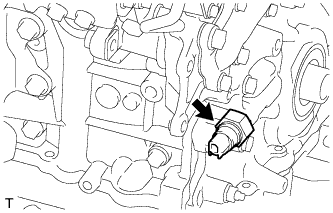 |
С помощью удлиненной торцевой головки на 24 мм снимите контактный датчик давления масла.
| 2. СНИМИТЕ ДАТЧИК ТЕМПЕРАТУРЫ ОХЛАЖДАЮЩЕЙ ЖИДКОСТИ |
 |
С помощью удлиненной торцевой головки на 19 мм снимите датчик.
Снимите прокладку с датчика.
| 3. СНИМИТЕ КРАН ДЛЯ СЛИВА ОХЛАЖДАЮЩЕЙ ЖИДКОСТИ ИЗ БЛОКА ЦИЛИНДРОВ |
Снимите 2 пробки с кранов для слива охлаждающей жидкости.
Снимите 2 крана для слива охлаждающей жидкости из блока цилиндров.
| 4. СНИМИТЕ ДАТЧИК ПОЛОЖЕНИЯ РАСПРЕДВАЛА |
| 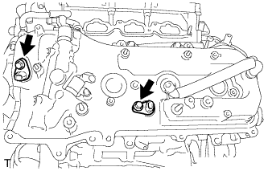 |
Слева:
Выверните 2 болта и снимите 2 датчика положения распредвала.
| 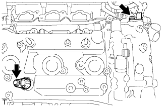 |
Справа:
Выверните 2 болта и снимите 2 датчика положения распредвала.
| 5. СНИМИТЕ ДАТЧИК ПОЛОЖЕНИЯ КОЛЕНЧАТОГО ВАЛА |
 |
Выверните болт и снимите датчик положения коленчатого вала.
| 6. СНИМИТЕ ПРАВЫЙ ГИДРАВЛИЧЕСКИЙ КЛАПАН ИЗМЕНЕНИЯ ФАЗ В СБОРЕ |
| 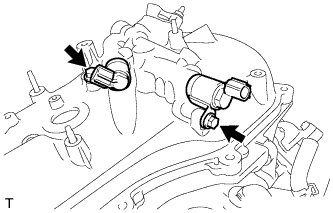 |
Левая сторона:
Выверните 2 болта и снимите 2 гидравлических клапана изменения фаз.
 |
Правая сторона:
Выверните 2 болта и снимите 2 гидравлических клапана изменения фаз.
| 7. СНИМИТЕ КОРПУС КРЫШКИ МАСЛОНАЛИВНОЙ ГОРЛОВИНЫ |
Снимите крышку маслоналивной горловины.
Отверните 2 гайки и снимите корпус крышки маслоналивной горловины с прокладкой.
| 8. СНИМИТЕ МАСЛОПРОВОД № 1 |
 |
Снимите 2 штуцера маслопровода, левый фильтр гидравлического клапана изменения фаз, 3 прокладки и маслопровод № 1.
| 9. СНИМИТЕ МАСЛОПРОВОД № 2 |
| 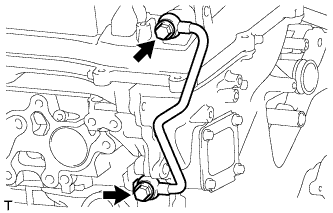 |
Снимите 2 штуцера маслопровода, правый фильтр гидравлического клапана изменения фаз, 3 прокладки и маслопровод № 2.
| 10. СНИМИТЕ ФИЛЬТРУЮЩИЙ ЭЛЕМЕНТ МАСЛЯНОГО ФИЛЬТРА |
 |
Подсоедините шланг с внутренним диаметром 15 мм (0,591 дюйма) к трубке.
| *1 | Патрубок |
| *2 | Метка |
 |
Снимите пробку сливного отверстия масляного фильтра.
Установите трубку на крышку масляного фильтра.
| *1 | Пробка |
| *2 | Клапан |
| *3 | Патрубок |
| *4 | Кольцевое уплотнение |
| *5 | Шланг |
 |
Убедитесь, что масло слито из масляного фильтра. Затем отсоедините трубку и снимите кольцевое уплотнение, как показано на рисунке.
 |
Снимите крышку масляного фильтра с помощью SST.
| *1 | Фиксатор кронштейна масляного фильтра |
Снимите с крышки масляного фильтра фильтрующий элемент масляного фильтра и кольцевое уплотнение.
| *1 | Кольцевое уплотнение |
| 11. СНИМИТЕ КРОНШТЕЙН МАСЛЯНОГО ФИЛЬТРА |
 |
Отверните 2 гайки, выверните болт и снимите кронштейн масляного фильтра с прокладкой.
| *A | Для моделей с масляным радиатором |
| *B | Для моделей без масляного радиатора |
| 12. СНИМИТЕ КОЖУХ ВПУСКНОГО ПАТРУБКА ОХЛАЖДАЮЩЕЙ ЖИДКОСТИ |
| 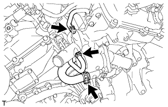 |
Отсоедините 3 перепускных шланга охлаждающей жидкости.
 |
Выверните 5 болтов и снимите кожух впускного патрубка охлаждающей жидкости.
 |
Снимите кольцевое уплотнение и прокладку с отводящей трубки системы охлаждения и насоса системы охлаждения.
 |
Подсоедините 3 перепускных шланга охлаждающей жидкости.
| 13. СНИМИТЕ ЗАДНИЙ СОЕДИНИТЕЛЬ ПЕРЕПУСКА ОХЛАЖДАЮЩЕЙ ЖИДКОСТИ |
 |
Выверните 2 болта, отверните 4 гайки и снимите задний соединитель перепуска охлаждающей жидкости и 2 прокладки.
Снимите кольцевое уплотнение с выпускного патрубка охлаждающей жидкости № 1.
| 14. СНИМИТЕ СВЕЧУ ЗАЖИГАНИЯ |
Снимите 6 свечей зажигания.
| 15. СНИМИТЕ КЛАПАН ПРИНУДИТЕЛЬНОЙ ВЕНТИЛЯЦИИ КАРТЕРА В СБОРЕ |
Снимите шланг клапана принудительной вентиляции картера.
 |
Снимите клапан PCV.
| 16. СНИМИТЕ ШКИВ КОЛЕНЧАТОГО ВАЛА |
 |
Используя SST, зафиксируйте шкив коленчатого вала и ослабьте болт шкива. Дополнительно ослабьте болт, чтобы он был ввернут в коленчатый вал на 2 - 3 витка резьбы.
 |
С помощью установочного болта шкива и SST снимите шкив коленчатого вала и выверните болт шкива.
| 17. СНИМИТЕ ЛЕВУЮ КРЫШКУ ГОЛОВКИ БЛОКА ЦИЛИНДРОВ В СБОРЕ |
Выверните 12 болтов и снимите уплотнительную шайбу, крышку головки блока цилиндров и прокладку.
 |
Снимите 3 прокладки.
| 18. СНИМИТЕ КРЫШКУ ГОЛОВКИ БЛОКА ЦИЛИНДРОВ В СБОРЕ |
Выверните 12 болтов и снимите уплотнительную шайбу, крышку головки блока цилиндров и прокладку.
| 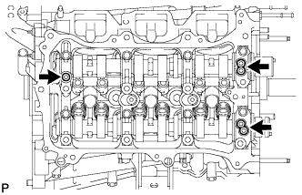 |
Снимите 3 прокладки.
| 19. СНИМИТЕ ПРОКЛАДКУ ТРУБКИ СВЕЧНОГО КОЛОДЦА |
Отогните захваты отражающей вентиляционной заслонки на крышке головки блока цилиндров на угол не менее 90°.
 | Подденьте |
Снимите 6 прокладок трубок свечных колодцев.
| 20. СНИМИТЕ ДАТЧИК УРОВНЯ МОТОРНОГО МАСЛА (для моделей с подогревателем) |
Отсоедините разъем.
 |
Выверните 4 болта и снимите датчик.
Срежьте часть прокладки и снимите прокладку с датчика уровня моторного масла.
| 21. ВЫКРУТИТЕ ПРОБКУ СЛИВНОГО ОТВЕРСТИЯ МАСЛЯНОГО ПОДДОНА |
Выверните пробку сливного отверстия и снимите прокладку.
| 22. СНИМИТЕ ПОДДОН КАРТЕРА № 2 В СБОРЕ |
| 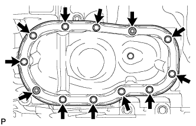 |
Выверните 10 болтов и отверните 2 гайки.
| 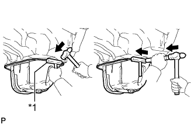 |
Вставьте лезвие инструмента для обрезки прокладки поддона картера между масляными поддонами. Срежьте нанесенный герметик и снимите масляный поддон № 2 в сборе.
| *1 | Инструмент для обрезки прокладки масляного поддона |
| 23. СНИМИТЕ МАСЛОПРИЕМНИК С СЕТЧАТЫМ ФИЛЬТРОМ В СБОРЕ |
 |
Отверните 2 гайки и снимите маслоприемник с сетчатым фильтром и прокладку.
| 24. СНИМИТЕ МАСЛЯНЫЙ ПОДДОН В СБОРЕ |
 |
Выверните 17 болтов и отверните 2 гайки.
 |
С помощью отвертки отделите масляный поддон, используя ее в качестве рычага в определенных местах между блоком цилиндров и масляным поддоном, как показано на рисунке.
| *1 | Левая сторона |
| *2 | Правая сторона |
| *a | Подденьте |
 |
Снимите 3 кольцевых уплотнения с крышки цепного привода газораспределительного механизма.
| 25. СНИМИТЕ ОТРАЖАТЕЛЬ МАСЛЯНОГО ПОДДОНА № 1 |
| 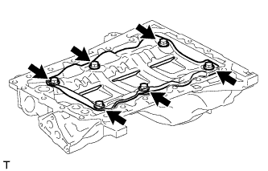 |
Выверните 6 болтов и снимите отражатель масляного поддона № 1.
| 26. СНИМИТЕ СТОПОР ЗАДНЕГО САЛЬНИКА КОЛЕНЧАТОГО ВАЛА |
Выверните 5 болтов и отверните 2 гайки.
Отверткой отделите стопор сальника, вставив ее между стопором сальника и крышкой подшипника коленчатого вала.
| *a | Подденьте |
| 27. СНИМИТЕ ЗАДНИЙ САЛЬНИК КОЛЕНЧАТОГО ВАЛА |
Извлеките сальник с помощью отвертки и молотка.
| 28. СНИМИТЕ КРЫШКУ ЦЕПНОГО ПРИВОДА ГАЗОРАСПРЕДЕЛИТЕЛЬНОГО МЕХАНИЗМА В СБОРЕ |
| 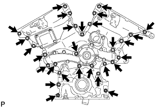 |
Выверните 26 болтов и отверните 2 гайки.
| 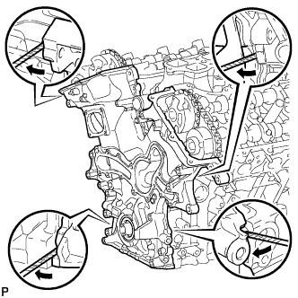 |
Снимите крышку цепного привода газораспределительного механизма, вставив отвертку между крышкой цепного привода и головкой блока цилиндров или блоком цилиндров.
| 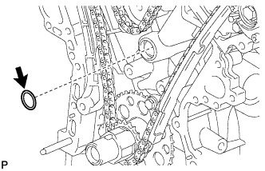 |
Снимите прокладку масляного насоса с головки блока цилиндров.
| 29. СНИМИТЕ НАСОС СИСТЕМЫ ОХЛАЖДЕНИЯ В СБОРЕ |
 |
Выверните 8 болтов, снимите насос охлаждающей жидкости и прокладку.
| 30. СНИМИТЕ ПЕРЕДНИЙ САЛЬНИК КОЛЕНЧАТОГО ВАЛА |
Извлеките сальник с помощью отвертки и деревянного бруска.
| 31. УСТАНОВИТЕ ПОРШЕНЬ ЦИЛИНДРА № 1 В ВМТ ТАКТА СЖАТИЯ |
Временно вверните установочный болт шкива.
 |
Поворачивая коленчатый вал по часовой стрелке, совместите установочные метки на зубчатом диске датчика положения коленчатого вала с осевой линией отверстия правого блока (ВМТ такта сжатия).
| *1 | Центральная линия |
| *2 | Установочная метка |
| *3 | Пластина датчика |
 |
Убедитесь, что установочные метки на зубчатых колесах распредвала совмещены с установочными метками на крышках подшипников, как показано на рисунке.
Если это не удается сделать, проверните коленчатый вал на 1 оборот (360°) и совместите метки, как указано выше.
| *1 | Установочная метка |
| 32. СНИМИТЕ НАТЯЖИТЕЛЬ ЦЕПИ № 1 В СБОРЕ |
 |
Отведите стопорную пластину вверх, чтобы освободить фиксатор, и глубоко вдавите плунжер в натяжитель.
| *1 | Плунжер |
| *2 | Стопорная пластина |
| *3 | Штифт |
Опустите стопорную пластину, чтобы ввести фиксатор в зацепление, и вставьте в отверстие стопорной пластины штифт диаметром 1,27 мм (0,0500 дюйма).
 |
Выверните 2 болта и снимите натяжитель цепи № 1 в сборе.
| 33. СНИМИТЕ БАШМАК НАТЯЖИТЕЛЯ ЦЕПИ |
| 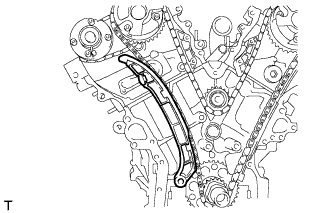 |
Снимите башмак натяжителя цепи.
| 34. СНИМИТЕ ЦЕПЬ № 1 В СБОРЕ |
 |
Проверните коленчатый вал на 10° против часовой стрелки, чтобы ослабить цепь на ведущей звездочке коленчатого вала.
| *1 | Центральная линия |
| *2 | Установочная метка |
| *3 | Пластина датчика |
Выверните установочный болт шкива.
| 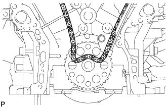 |
Снимите цепь с ведущей звездочки цепи ГРМ на коленчатом валу и поместите ее на коленчатый вал.
| 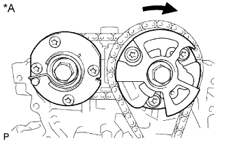 |
Поверните зубчатое колесо распредвала ряда 1 по часовой стрелке приблизительно на 60° и установите его, как показано на рисунке. Не забудьте ослабить цепь между рядами.
Снимите цепь в сборе.
| *A | для ряда 1 |
| 35. СНИМИТЕ ВАЛ ПРОМЕЖУТОЧНОЙ ШЕСТЕРНИ № 1 |
 |
С помощью шестигранного ключа на 10 мм снимите вал промежуточной шестерни № 2, промежуточную шестерню № 1 и вал промежуточной шестерни № 1.
| 36. СНИМИТЕ УСПОКОИТЕЛЬ ЦЕПИ № 1 |
 |
Выверните 2 болта и снимите успокоитель цепи №1.
| 37. СНИМИТЕ УСПОКОИТЕЛЬ ЦЕПИ № 2 |
 |
Снимите 2 успокоителя цепи № 2.
| 38. СНИМИТЕ ВЕДУЩУЮ ЗВЕЗДОЧКУ КОЛЕНЧАТОГО ВАЛА |
 |
Снимите ведущую звездочку цепи ГРМ на коленчатом валу.
| 39. СНИМИТЕ ЗУБЧАТЫЕ КОЛЕСА РАСПРЕДВАЛА И ЦЕПЬ № 2 (для ряда 1) |
| 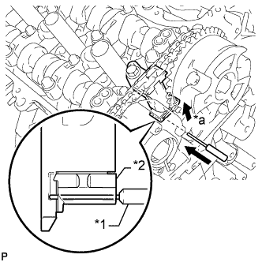 |
Подняв натяжитель цепи № 2 в сборе, зафиксируйте его, вставив в отверстие штифт диаметром 1,0 мм (0,0394 дюйма).
| *1 | Штифт |
| *2 | Плунжер |
| *a | Нажмите |
| 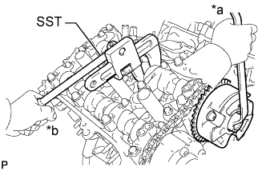 |
Удерживая с помощью SST шестигранный участок каждого распредвала, ослабьте болты зубчатого колеса распредвала и зубчатого колеса распредвала выпускных клапанов.
| *a | Поверните |
| *b | Удерживайте |
Выверните 2 болта и снимите зубчатое колесо распредвала в сборе вместе с надетой цепью № 2.
| 40. СНИМИТЕ НАТЯЖИТЕЛЬ ЦЕПИ № 2 В СБОРЕ |
| 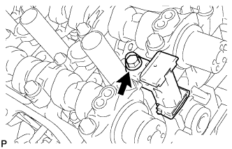 |
Выверните болт и снимите натяжитель цепи № 2.
| 41. СНИМИТЕ КРЫШКУ ПОДШИПНИКА РАСПРЕДВАЛА (для ряда 1) |
| 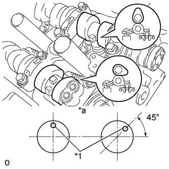 |
Проверьте, чтобы распредвалы располагались, как показано на рисунке.
| *1 | Штифт |
| *a | Вид спереди |
 |
В несколько приемов равномерно ослабьте и выверните 8 болтов крышек подшипников в последовательности, показанной на рисунке.
 |
В несколько приемов равномерно ослабьте и выверните 12 болтов крышек подшипников в последовательности, показанной на рисунке.
Снимите 5 крышек подшипников распредвала.
Снимите распредвал и распредвал № 2.
| 42. СНИМИТЕ ПРАВЫЙ КОЖУХ РАСПРЕДВАЛА В СБОРЕ |
| 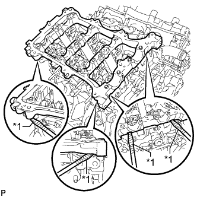 |
Снимите правый кожух распредвала в сборе, вставив отвертку между головкой блока цилиндров и правым кожухом распредвала.
| *1 | Защитная клейкая лента |
| 43. СНИМИТЕ ЗУБЧАТЫЕ КОЛЕСА РАСПРЕДВАЛА И ЦЕПЬ № 2 (для ряда 2) |
| 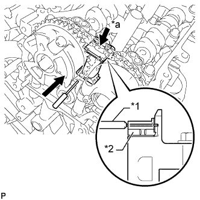 |
Отжав натяжитель цепи № 3 в сборе вниз, зафиксируйте его, вставив в отверстие штифт диаметром 1,0 мм (0,0394 дюйма).
| *1 | Штифт |
| *2 | Плунжер |
| *a | Нажмите |
 |
Удерживая с помощью SST шестигранный участок каждого распредвала, ослабьте болты зубчатого колеса распредвала и зубчатого колеса распредвала выпускных клапанов.
| *a | Поверните |
| *b | Удерживайте |
Выверните 2 болта и снимите зубчатое колесо распредвала вместе с надетой цепью № 2.
| 44. СНИМИТЕ НАТЯЖИТЕЛЬ ЦЕПИ № 3 В СБОРЕ |
 |
Выверните болт и снимите натяжитель цепи № 3.
| 45. СНИМИТЕ КРЫШКУ ПОДШИПНИКА РАСПРЕДВАЛА (для ряда 2) |
 |
Проверьте, чтобы распредвалы располагались, как показано на рисунке.
| *1 | Штифт |
| *a | Вид спереди |
| 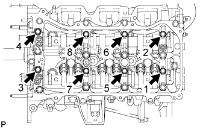 |
В несколько приемов равномерно ослабьте и выверните 8 болтов крышек подшипников в последовательности, показанной на рисунке.
 |
В несколько приемов равномерно ослабьте и выверните 13 болтов крышек подшипников в последовательности, показанной на рисунке.
Снимите 5 крышек подшипников распредвала.
Снимите распредвалы № 3 и 4.
| 46. СНИМИТЕ ЛЕВЫЙ КОЖУХ РАСПРЕДВАЛА В СБОРЕ |
 |
Снимите левый кожух распредвала, вставив отвертку между головкой блока цилиндров и левым кожухом распредвала.
| *1 | Защитная клейкая лента |
| 47. СНИМИТЕ РЫЧАГ ПРИВОДА КЛАПАНА № 1 В СБОРЕ |
Снимите 24 рычагов приводов клапанов с головки блока цилиндров.
| 48. СНИМИТЕ МЕХАНИЗМ РЕГУЛИРОВКИ ЗАЗОРА В ПРИВОДЕ КЛАПАНА В СБОРЕ |
Снимите 24 механизма регулировки зазора в приводе клапана с головки блока цилиндров.
| 49. СНИМИТЕ КОЛПАК ШТОКА КЛАПАНА |
Снимите 24 колпака штоков клапанов с головки блока цилиндров.
| 50. СНИМИТЕ ГОЛОВКУ БЛОКА ЦИЛИНДРОВ В СБОРЕ |
| 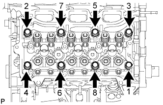 |
С помощью 12-гранного ключа на 8 мм в несколько приемов равномерно ослабьте 10 болтов крепления головки блока цилиндров в последовательности, показанной на рисунке. Выверните 8 болтов головки блока цилиндров и снимите плоские шайбы.
Снимите головку блока цилиндров в сборе.
| 51. СНИМИТЕ ЛЕВУЮ ГОЛОВКУ БЛОКА ЦИЛИНДРОВ |
 |
В несколько приемов равномерно ослабьте и выверните 2 болта крепления головки блока цилиндров в последовательности, показанной на рисунке.
 |
С помощью 12-гранного гаечного ключа на 10 мм в несколько приемов равномерно ослабьте 8 болтов в последовательности, показанной на рисунке. Выверните 8 болтов головки блока цилиндров и снимите плоские шайбы.
Снимите левую головку блока цилиндров.
| 52. СНИМИТЕ ПРОКЛАДКУ ГОЛОВКИ БЛОКА ЦИЛИНДРОВ |
| 53. СНИМИТЕ ПРОКЛАДКУ ГОЛОВКИ БЛОКА ЦИЛИНДРОВ № 2 |
| 54. СНИМИТЕ ВОДООТВОДЯЩУЮ ТРУБКУ № 1 |
Отсоедините 3 зажима жгута проводов.
Отверните 2 гайки, выверните болт и снимите отводящую трубку системы охлаждения.
| 55. СНИМИТЕ ДАТЧИК ДЕТОНАЦИИ |
 |
Отсоедините 2 разъема датчиков.
Выверните 2 болта и снимите 2 датчика.
| 56. СНИМИТЕ РАСПОРНУЮ ДЕТАЛЬ ВОДЯНОЙ РУБАШКИ БЛОКА ЦИЛИНДРОВ |
Снимите 2 распорные втулки водяной рубашки с головки блока цилиндров.
| 57. ИЗВЛЕКИТЕ СТОПОРНЫЙ ШТИФТ |
| 58. СНИМИТЕ СОЕДИНИТЕЛЬНОЕ КОЛЬЦО |
| 59. СНИМИТЕ РЕЗЬБОВУЮ ШПИЛЬКУ |